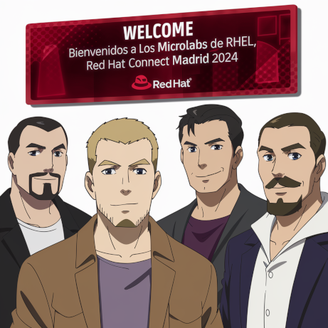

Despliegue y gestión de contenedores en RHEL

En este microlaboratorio, podraś explorar el despliegue y la gestión de contenedores en RHEL 9 usando Podman en la línea de comandos (CLI); y de manera gráfica, con Podman Desktop.
En este workshop la parte práctica que tiene que realizar el alumno vendrá indicada de la siguiente forma:
|
Ejemplo práctico para que lo haga el alumno. |